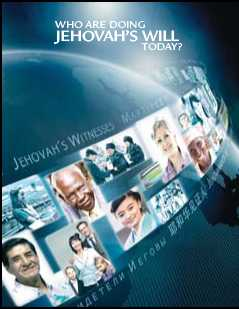

MARCH 2013
WEEK STARTING MARCH 11
Song 68 and Prayer
Q Congregation Bible Study:
jr chap. 6 ^13-18, box on p. 74 (30 min.)
Q Theocratic Ministry School:
Bible reading: Mark 13-16 (10 min.) No. 1: Mark 14:22-42 (4 min. or less)
No. 2: What Is the Significance of the Memorial?—rs p. 266 ^1-p. 267 fl1 (5 min.) No. 3: What Do the Memorial Emblems Represent?—rs p. 267 ^2-3 (5 min.)
Q Service Meeting:
Song 109
10 min: What Do We Learn? Discussion. Have Matthew 10:7-10 and Luke 10:1-4 read. Consider how these accounts can help us in our ministry.
10 min: Ways to Expand Your Ministry —Part 1. Discussion based on the Organized book, page 111, paragraph 1, to page 112, paragraph 2. Interview one or two publishers who have moved or learned another language in order to expand their ministry. What challenges did they have to overcome? How did their family or the congregation assist them? What blessings have they enjoyed?
10 min: “Prepare for the Memorial With a Joyful Heart.” Questions and answers. Review local arrangements for the Memorial. Report on the local progress of the invitation campaign.
Song 8 and Prayer
Prepare for the Memorial With a Joyful Heart
1 The Memorial on Tuesday, March 26, provides an excellent opportunity to rejoice in God’s means of salvation. (Isa. 61:10) Even before the upcoming obser-
1. The Memorial season is a special time to do what?
vance, a joyful spirit will help us to be well-prepared. How so?
2 Preparing for the Observance: The Lord’s Evening Meal is a profound yet simple observance. Still, it requires advance planning so that important details are not overlooked. (Prov. 21:5) The time and a suitable location must be selected. The proper emblems need to be obtained. The meeting place has to be cleaned and readied. The designated speaker needs to prepare carefully, and the servers and attendants must be organized. No doubt much of this has already been done. Gratitude for the saving power of the ransom moves us to prepare well for this sacred occasion.—1 Pet. 1:8, 9.
3 Preparing the Heart: It is also essential to prepare our heart to appreciate the full significance of the Memorial. (Ezra 7: 10) To that end, we should set aside time to consider the special Memorial Bible reading and then ponder the final days of Jesus’ earthly life. Meditating on Jesus’ self-sacrificing spirit will motivate us to imitate him.—Gal. 2:20.
4 Christ’s death vindicates Jehovah’s sovereignty. It gives release from sin and death. (1 John 2:2) It opens the way for peaceful relations with God and the way to eternal life. (Col. 1:21, 22) It also helps us to strengthen our resolve to live up to our dedication to Jehovah and remain firm as Christ’s disciples. (Matt. 16:24) As you prepare for and attend the upcoming Memorial, may your joy be increased!
2. What impels us to make preparations for the Memorial observance?
3. How can we prepare our heart for the Lord’s Evening Meal?
4. Which benefit of the ransom gives you the greatest joy?
WEEK STARTING MARCH 18
Song 120 and Prayer
Q Congregation Bible Study:
jr chap. 6 ^19-24, box on p. 78 (30 min.)
Q Theocratic Ministry School:
Bible reading: Luke 1-3 (10 min.)
No. 1: Luke 1:24-45 (4 min. or less)
No. 2: Who Should Partake of the Emblems at the Lord’s Evening Meal?—rs p. 267 fl5-p. 268 fl1 (5 min.)
No. 3: How Often Should the Memorial Be Commemorated, and When?—rs p. 269 fl1-2 (5 min.)
Q Service Meeting:
Song 118
12 min: “Welcome Them!” Questions and answers. Have a two-part demonstration showing a publisher taking the initiative to welcome a visitor and then, after the program concludes, tactfully making arrangements to further the person’s interest.
18 min: “How to Use Who Are Doing Jehovah’s Will Today?” Questions and answers. Have a seven-minute demonstration of a publisher discussing one of the lessons with a Bible student.
Song 20 and Prayer
Welcome Them!
1 No occasion offers us a better opportunity to give a witness than the annual Memorial observance. Consider: This year over ten million visitors are expected to attend the Memorial and hear about the two greatest expressions of love, which were manifested by the ransom. (John 3:16; 15: 13) They will learn about the blessings available to them because of Jehovah’s gift. (Isa. 65:21-23) However, the speaker is not the only one who will give a witness on this occasion. All in attendance will have
1. What occasion offers us an excellent opportunity to give a witness, and why? the opportunity to give a powerful witness by warmly welcoming the visitors.—Rom. 15:7.
2 Rather than just finding your seat and silently waiting for the program to begin, why not take the initiative to introduce yourself to those nearby? Visitors may be nervous and unsure of what to expect. Our warm smile and friendly greeting will go a long way toward putting them at ease. To find out if someone is present as a result of receiving an invitation, you might ask if this is his first time attending one of our meetings or if he knows anyone in the congregation. Perhaps you can invite him to sit with you and share your Bible and songbook. If a Kingdom Hall is being used, it may be possible to give him a brief tour. After the talk, make yourself available to answer his questions. If your congregation must leave quickly to make room for another congregation, you might say: “I’d like to hear what you thought of the program. Is there a way that I can contact you?” Then make arrangements to follow up on the interest. Elders will especially want to be alert to encourage inactive publishers who attend.
3 For many visitors, this will be their first taste of the joy, peace, and unity of the spiritual paradise that we enjoy as Jehovah’s people. (Ps. 29:11; Isa. 11:6-9; 65:13, 14) What impression will visitors take away? Much will depend on our taking the initiative to welcome them.
2. How can we warmly welcome visitors?
3. Why is it important that we take the initiative to welcome visitors at the Memorial?
Field Service Highlights
For October, the second month of the new service year, how encouraging to note two further new peaks of regular pioneers, 11,167in Britain, and 659 inIreland.
© 2013 Christian Congregation of Jehovah’s Witnesses. All rights reserved. Our Kingdom Ministry is printed monthly by Watch Tower Bible and Tract Society of Britain, The Ridgeway, London NW7 1RN (Registered in England as a Charity).
1 Have you started using the new brochure Who Are Doing Jehovah’s Will Today? Its purpose is (1) to familiarize Bible students with us as a people, (2) to help them learn about our activities, and (3) to show them our organization in action. The Jehovah’s Will brochure contains one-page lessons that can easily be covered in just five to ten minutes at the end of each study.
2 How It Is Designed: The brochure is divided into three sections, each of which discusses a different aspect of Jehovah’s organization, as noted above. The title of each of the 28 lessons is written as a question, and the bold subheadings that follow answer that question. Photographs from over 50 countries are labeled throughout to show the international scope of our work. A number of lessons have “Find Out More” boxes, which contain suggestions that you can encourage your student to pursue.
3 How You Can Use It: Start by calling attention to the question that is the title of the lesson. Then, as you read the lesson together, highlight the bold subheadings. Finally, consider the review questions at the bottom
1. What is the threefold purpose of the Jehovah’s Will brochure?
2. Describe the design and features of this brochure.
3. How can we use the Jehovah’s Will brochure?
of the page. You can read the lesson straight through or read and discuss it in sections. Use your judgment in deciding which cited scriptures to read. Do not forget to consider the pictures and the “Find Out More” boxes. In most cases, the lessons should be discussed in order. However, feel free to jump ahead to a lesson that deals with something of immediate interest. For example, if an assembly or a convention is coming up, you could skip to lesson 11.
4 When we study the Bible with someone, we help him to get acquainted with our heavenly Father. However, we also need to teach him about Jehovah’s organization. (Prov. 6:20) How happy we are to have this new tool that makes it easy to do so!
4. Why are you happy to have this new tool?
WEEK STARTING MARCH 25
Song 76 and Prayer
Q Congregation Bible Study:
jr chap. 7 fl1-6 (30 min.)
Q Theocratic Ministry School:
Bible reading: Luke 4-6 (10 min.)
No. 1: Luke 4:22-39 (4 min. or less)
No. 2: From Where Did the Various Races
Come?—rs p. 301 fl1-4 (5 min.)
No. 3: What Proof Is There That Jesus Was
Resurrected?—1 Cor. 15:3-7 (5 min.)
Q Service Meeting:
Song 111
5 min: Start a Bible Study on the First Saturday. Using the sample presentation on page 8, demonstrate how a study may be started on the first Saturday in April. Encourage all to have a share.
25 min: “How to Use Good News From God!” Questions and answers. When considering paragraph 6, have two demonstrations.
Song 97 and Prayer
1 During the “Safeguard Your Heart!” District Convention, we were excited to receive a new brochure to help us make return visits and start Bible studies. Good News From God! is similar to the Require brochure, which it replaces, in that the lessons are concise. This lends itself to using the brochure for doorstep Bible studies. However, while the Require brochure discussed Christian requirements, which can be challenging for new students to accept, this new brochure focuses on the good news found in the Bible.—Acts 15:35.
2 Why was it produced? Brothers around the world have been asking for something simple that would attract people to the truth and lead into the
1. What new brochure released at the “Safeguard Your Heart!” District Convention is designed to help us make return visits and start Bible studies?
2. Why was the Good News brochure produced?
Bible Teach book, our primary tool for Bible studies. People who are intimidated by a book are often more willing to study the Bible using a brochure. In addition, a brochure is more easily translated into a large number of languages.
3 How It Is Designed: Many of our study publications are written so that a
3. How is this brochure different from other study publications? person can read it and understand the truth, even without help. This publication is different. It is written as a guide for Bible study with an instructor. Therefore, when offering it to someone, it is best to discuss a paragraph or two. The paragraphs are short, so they can even be considered at a person’s doorstep or his place of business. While lesson 1 is a good place to begin, we can start a study almost anywhere in the brochure.
4 In many of our publications, the answers to the printed questions can be found in the paragraphs. However, in this publication, the answers are found mainly in the Bible. Most people want to learn from the Bible rather than from our literature. Therefore, almost none of the cited scriptures are quoted. They are to be read from the Bible itself. This helps students realize that what they are learning comes from God.—Isa. 54:13.
5 The brochure does not explain all the scriptures. Why? It is designed to encourage the student to ask questions and to allow the instructor to use his teaching ability. Therefore, it is important to be well-prepared for each study period. A word of caution: Do not talk too much. We love to explain the Scriptures. But we often accomplish more by inviting the student to explain what he thinks the scripture means. By using questions tactfully, we can help him to reason out the meaning of each text. —Acts 17:2.
4. How does the brochure help us to teach directly from the Bible?
5. Why is it important for the conductor to be well-prepared for each study period?
6 Like other publications for conducting studies, this brochure can be offered at any time, regardless of what is being featured for the month. Many will enjoy using it with the direct approach to start doorstep studies. In addition, as mentioned at the district convention, using it when calling back on those who showed interest “can really make the return visit work exciting!” —See the boxes on pages 5-7.
7 How to Conduct the Study: We could begin the discussion by reading the numbered question in bold print. Next, read the paragraph and the scrip-ture(s) in italics. Use tactful questions to help the householder understand what the scriptures mean. Then, before moving on to the next section,
6. How can we use the brochure (a) where people are skeptical about God and the Bible? (b) when going from house to house? (c) when using the direct approach to start Bible studies? (d) when making return visits?
7. How might you conduct a Bible study using the brochure?
• In some areas, publishers find that the words “God” and “Bible” are conversation stoppers. In that case, on the initial visit, it may be best to discuss topics that are of local concern, such as the need for good government, where to get practical help for families, and what the future holds. Perhaps the Good News brochure can be introduced after we have had several conversations considering how we know that God exists and why the Bible is trustworthy. ask the householder to answer the question in bold print, to make sure he understands. For the first few visits, it may be best to consider just one of the questions in bold print. In time, we may be able to lengthen the discussions to include an entire lesson.
8 Scripture citations that are preceded by the word “read” are the ones that most directly answer the question in bold print. When introducing a scripture, avoid saying, “The apostle Paul
8. How should we introduce scriptures, and why?
• “I’m calling to show you how easy it can be to find out what God has in mind for mankind’s future. Have you ever wondered whether God will relieve us of suffering? [Allow for response.] This brochure shows where in the Bible you can find the answer to that question. [Hand him a brochure, and read the first paragraph in lesson 1, as well as Jeremiah 29: 11.] From this, does it seem reasonable to you that God wants us to have a better future? [Allow for response.] If you like, you may keep this copy. Next time, we can consider the second paragraph to find the Bible’s answer to this question, ‘How will God relieve mankind of the causes of suffering?’” If the householder seems to have more time on the initial visit, you may be able to read and discuss the second paragraph and its three Bible texts. Arrange to return to discuss the second question in that lesson.
• “Many people like to pray, especially when they have problems. Do you pray sometimes? [Allow for response.] Do wrote” or, “Notice what Jeremiah foretold.” The householder might think that we are reading the words of mere humans. It would be better to say, “The Word of God says” or, “Notice what the Bible foretold.”
9 Should we read all the cited scriptures or only the “read” scriptures? Be guided by the circumstances. None of the cited texts are there simply to show where a thought is found in the Bible. Each one contains information that is
9. Should all the cited scriptures be read during the study?
you think that God listens to all prayers, or could it be that some prayers do not please him? [Allow for response.] I have here a brochure that shows how to find the Bible’s answer to those questions. [Hand him a copy, and consider together the first paragraph of lesson 12 and the “read” scriptures.] Isn’t it marvelous that God is willing to listen to us? But to benefit fully from prayer, we need to know God well. [Turn to lesson 2 and point out the subheadings.] If you wish, I can leave this brochure with you, and at another time, we can read the Bible’s answers to these fascinating questions.” • “I’m here because people are concerned about where this world is heading. Do you think conditions will ever improve? [Allow for response.] Many people are surprised to learn that the Bible contains good news that can give us hope. Here are some of the questions that the Bible answers.” Hand him a brochure, and invite him to choose a question from the back cover that interests him the most. Then go to the lesson, and demonstrate the study. Make arrangements to return and to consider the next question in that lesson. worth discussing. But in some cases, the student’s lack of time, interest, or reading ability may suggest that we look up only the “read” scriptures.
10 When to Switch to the Bible Teach Book: After several discussions and once we have established a good routine, we can either switch to the Bible Teach book or continue in the Good News brochure until we have completed it. Publishers can use their judgment to decide when to switch. Once we switch to the Bible Teach book, must we start from the beginning? There are no rules on this. Each person is different. However, most students will benefit by going over the same subjects again in more detail in the Bible Teach book.
10. At what point can we switch the study to the Bible Teach book?
• “I stopped by to tell you about a new Bible study course. This brochure has 15 lessons that show where in your Bible you can find answers to vital questions. [Show him the front and back covers.] Have you ever tried to understand the Bible? [Allow for response.] Let me show you how easy the lessons are. [Consider the first paragraph of question 3 in lesson 3, and read Revelation 21:4, 5. If appropriate, consider the next paragraph and the “read” scriptures.] If you wish, I can leave this brochure with you. We recommend that you try studying the Bible at least once. If you like it, you can continue. Next time, we can consider the first lesson. Notice that it is only one page long.”
• When returning to visit someone who has shown interest, we might say: “It’s nice to see you again. I brought you this brochure that gives the Bible’s answer to many interesting questions. [Hand him a brochure, and invite him to look at the back cover.] Which of these topics interests you the most? [Allow for response. Then turn to the lesson he chose.] Let me show you how this brochure can be used to find the Bible’s answer.” Demonstrate the study by discussing a paragraph or two and the “read” scriptures. You have just started a Bible study! Leave the brochure with the householder, and make arrangements to return. When you complete the lesson, you can discuss another lesson chosen by the householder or start at the beginning of the brochure.
11 In a world where good news is scarce, we have the grand privilege of declaring the best news possible —that God’s Kingdom rules and that it will soon usher in a new world where righteousness is to dwell! (Matt. 24:14; 2 Pet. 3:13) We are confident that many who hear this message will echo these inspired words: “How comely upon the mountains are the feet of the one bringing good news, the one publishing peace, the one bringing good news of something better, the one publishing salvation, the one saying to Zion: ‘Your God has become king!’ ” (Isa. 52:7) May we use this new brochure to bring good news from God to thirsting ones in our territory!
11. Why should we make good use of this new brochure?
WEEK STARTING APRIL 1
Song 38 and Prayer
Q Congregation Bible Study:
jr chap. 7 fl7-13 (30 min.)
Q Theocratic Ministry School:
Bible reading: Luke 7-9 (10 min.)
No. 1: Luke 7:18-35 (4 min. or less)
No. 2: What New Nation Was Born at Pentecost, and With What Purpose?—Gal. 6:16;
1 Pet. 2:9 (5 min.)
No. 3: Where Did Cain Find His Wife?—w10 9/1 p. 25 updates rs p. 301 fl5-p. 302 fl1 (5 min.)
Q Service Meeting:
Song 113
10 min: Ideas for Offering the Magazines in April. Discussion. Take 30 to 60 seconds to relate why the magazines will have appeal in your territory. Then, using the cover subject of The Watchtower, invite the audience to suggest an interest-arousing question to ask and then invite suggestions on a scripture to read. Do the same for Awake! and, if time allows, for one other article from either magazine. Demonstrate how each issue may be offered.
10 min: Local needs.
10 min: Make Good Use of the 2013 Yearbook. Discussion. Review “A Letter From the Governing Body.” Arrange in advance for some to relate an encouraging experience from the Yearbook. Invite audience to comment on outstanding aspects of the worldwide report. Conclude by encouraging all to complete their reading of the Yearbook.
Song 75 and Prayer
Announcements
■ Literature offer for March and April: The Watchtower and Awake! magazines. When making return visits, introduce the Bible Teach book or, if more appropriate to the person’s needs, one of the brochures Listen to God or Listen to God and Live Forever, and try to start a Bible study. May and June: Publishers may feature any of the pocketsize tracts that are available or the tract Would You Like to Know the Truth? If there is interest, demonstrate a Bible study using the Bible Teach book or if appropriate to the person’s needs, one of the brochures listed above.
■ The Memorial will be held on Tuesday, March 26, 2013. If your congregation normally has a meeting on Tuesday, it should be switched to another day of the week if the Kingdom Hall is available. If the Service Meeting must be canceled, the coordinator of the body of elders may make adjustments to the schedule so that parts that are particularly applicable to your congregation are considered during the month. Congregations having the visit of the circuit overseer should reschedule the meetings normally held on Tuesday evening to another night during the visit.
■ The graduation of the first class of the Bible School for Christian Couples was held on December 2, 2012 in the Dublin, Clondalkin Kingdom Hall in Ireland. After 278 hours of classroom instruction and around 150 hours of homework, the 12 married couples returned to their homes, awaiting their new assignments.
Sample Presentations
To Start Bible Studies on the First Saturday in April
“We are encouraging our neighbors to read their Bible. But many people feel that the Bible is hard to understand. Have you found that to be true? [Allow for response.] Notice what this says.” Show the back of the April 1 Watchtower, and consider together the material under the first question and at least one of the cited scriptures. Offer the magazines, and arrange to return to discuss the next question.
WAT4HTO6ER April 1
Announcing Jehovah's Kingdom ■
“Everyone we talk to has to deal with problems. This causes some people to wonder about the meaning of life. What would you say is one of the biggest obstacles to happiness today? [Allow for response.] The Bible promises that God will soon remove the problems we now face. [Read Revelation 21:4.] This magazine discusses what our future prospects are as well as how we can find meaning in life even now.”
!"#$ April
“Domestic violence is a worldwide problem. Some say that contributing factors are a person’s culture, his family background, and violent entertainment. What do you think is the main reason for violence in the home? [Allow for response.] The Bible shows the proper relationship that should exist between a husband and wife. [Read Ephesians 5:33.] This magazine discusses how some marriages have been saved by applying Bible principles.”
8